カナミッククラウド訪問介護システム
訪問介護事業所向け介護ソフト
- スマートフォンアプリ（QR読取り機能搭載）で素早く記録
- 記録や事務作業の負担を軽減して訪問件数増加
- ケアマネジャーや多職種とシステム上で情報共有・連携強化
カナミッククラウド「訪問介護システム」とは
（訪問介護事業所向け介護ソフト）
ホームヘルパーのスケジュール管理や記録作業、請求時の複雑な計算や事務作業、
ケアマネジャーとの連携を一気通貫で支援する介護ソフトです（総合事業対応）
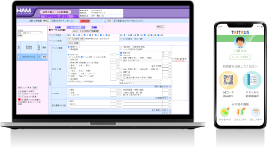
カナミック「訪問介護システム」で
お困りごとを解決！
|
Before |
After |
|
|
もっと！ 訪問介護業務をシステム化したい 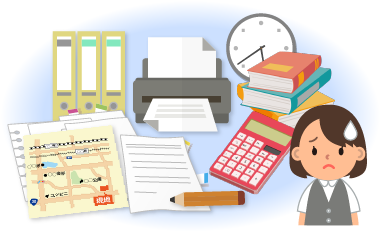 |
まとめてカナミッククラウド！ |
|
|
もっと！ 紙記録と転記作業をなくしたい 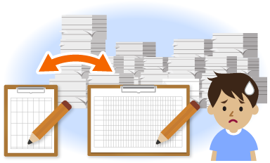 |
スマホアプリでかんたん介護記録！ 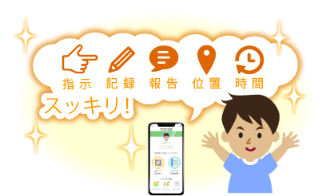 |
|
|
もっと！ ケアマネジャーとの連携を効率よくしたい 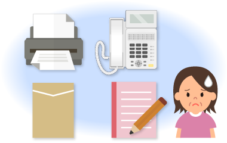 |
帳票や日々の状況をICT共有！ 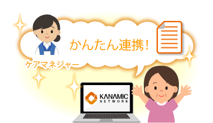 |
もっと！
訪問介護の「業務効率」を向上したい方へ
訪問介護計画作成からホームヘルパーの勤務予定や訪問スケジュール管理、
記録、予定・実績管理、保険請求・利用者請求まで訪問介護サービスの業務
フローに沿って効率アップできる訪問介護ソフトです。
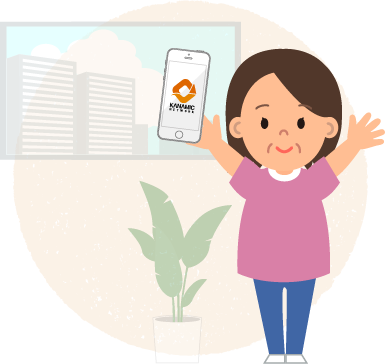
Point.1
計画も記録も請求もできる「オールインワン訪問介護ソフト」
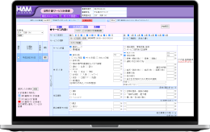
訪問介護計画
事務所で入力したサービスの予定（老計10）がスタッフの端末に自動同期され連絡時のミスを減らせます。
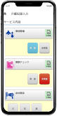
サービス実施記録
わかりやすい画面デザインで訪問ヘルパーがモバイル端末ボタンを押せば記録と報告が完了します。
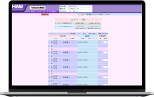
訪問介護保険請求
記録が訪問介護ステーションのPCに共有。介護請求用データ（サービスコード、単位数）に反映されます。
Point.2
事務業務の負担を大幅削減「かんたん介護記録」アプリ
サービス提供責任者（訪問介護事業所）⇔ ホームヘルパー（現場）を
リアルタイムにつなぐモバイルアプリです
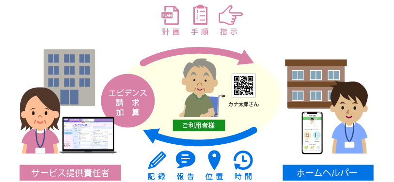
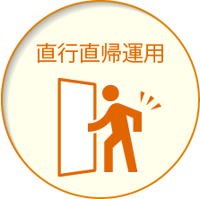
テレワークや直行直帰型のサービス運用が可能。退社時間を早め余分な残業時間を減らせます。
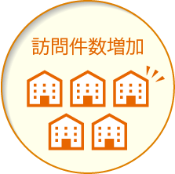
記録や事務作業にかかる時間を縮小し、ホームヘルパーの訪問件数増加につながります。
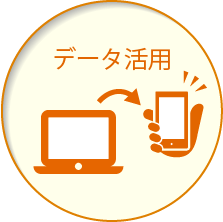
当日スケジュールや過去訪問介護記録や手順書等をスマホで閲覧。ケア記録やサービスのミスを防ぎます。
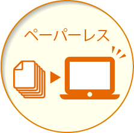
ホームヘルパーはモバイル端末でスケジュール確認。無駄な紙をなくし事務経費の削減に寄与します。
QRコードで位置情報と時間が送信でき（チェックイン機能）訪問介護サービス開始の電話連絡が不要です。
サービス提供責任者からの指示確認と報告が同一画面上ででき、特定事業所加算２の要件に対応可能です。
Point.3
ホームヘルパーの配置を効率化する「訪問シフトルート表」
- 日別のホームヘルパーの行動予定を見える化
 当日の予定配置や時間変更もカンタン
当日の予定配置や時間変更もカンタン- 訪問ルートの地図表示・移動時間の計算も可能
（オプション）
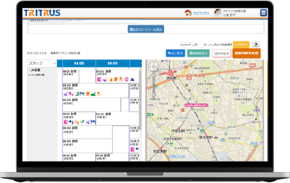
Point.4
“カナミック同士”でも“他社ソフト”でも「ケアマネジャー連携」
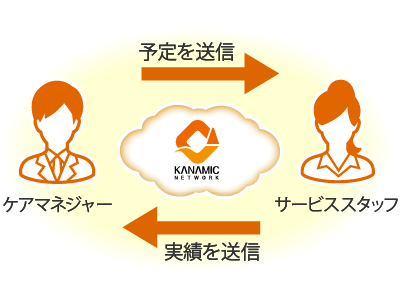
カナミッククラウド同士で連携する場合
ケアマネジャーが作成したケアプラン・提供票（別表）と、事業所のサービス実績の送受信をファイルアップロード・ダウンロードの手間なくシステム上で行えます。
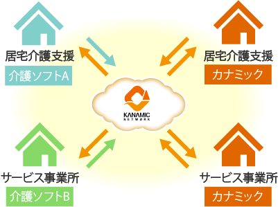
他社介護ソフトとの間で連携する場合
情報連携ユーザーならICT連携が可能になり居宅サービス計画書（ケアプラン）、サービス利用票・別表と実績の送受信が可能。郵送・FAXの作業負担や費用削減になります。
もっと！
法人内の「管理機能」を向上したい方へ
勤怠・給与管理、債権管理、請求ロック、会計連動、経営・分析など
の管理機能を備え本部で複数サービス・事業所の取りまとめ経営状況
を可視化し安定した事業運営ができる訪問介護ソフトです。
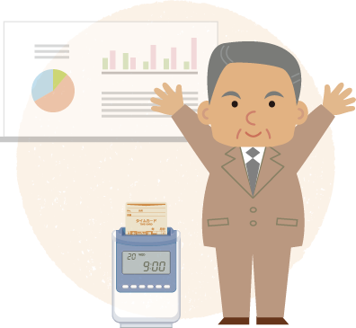
Point.1
安定した訪問介護サービス事業を支える管理機能
勤怠・給与管理機能（オプション）
パートや夜勤など多様な勤務形態の勤務時間登録が可能。
サービス実績取込で勤怠入力作業が軽減。休憩、サービス担当者会議、研修等の勤怠区分を設定し集計ができます。
お問合せページへ
債権管理機能（オプション）
国保連や利用者負担金、その他請求を登録し複数拠点の債権を本部で統合管理。利用者自己負担金集金代行システムと連動し債権化された売掛データ消込みまで自動です。
お問合せページへ
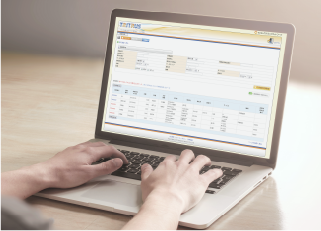
経営・統計分析（オプション）
業務システムに入力したデータから自動でシステム内で売上分析、統計分析し、見える化します。今後の経営戦略に役立つ情報を手軽に取得できます。
お問合せページへ
Point.2
法人組織・運営基準に沿った「コンプライアンス強化」
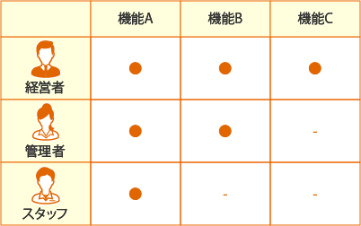
アカウント権限管理
カナミックのシステムは、個人認証によるログインですので、法人内の各担当者によって、システムの利用内容および利用権限をコントロールする事が可能です。
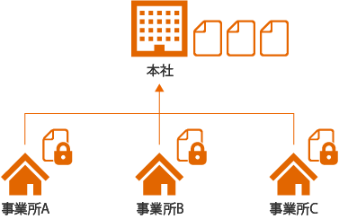
本社一括管理
法人組織・職制に合わせて必要なデータにアクセスができるように、拠点をまたいだ権限管理設定機能、帳票作成状況管理機能を搭載しています。
もっと！
「便利機能」で業務改善したい方へ
計画、記録、請求までのオールインワン訪問介護ソフト機能だけでなくそれぞれのユーザーのニーズにお応えできる多様な機能をご用意しています。
地域連携
ソリューション
業務
ソリューション
経理・事務
ソリューション
経営・運営
ソリューション